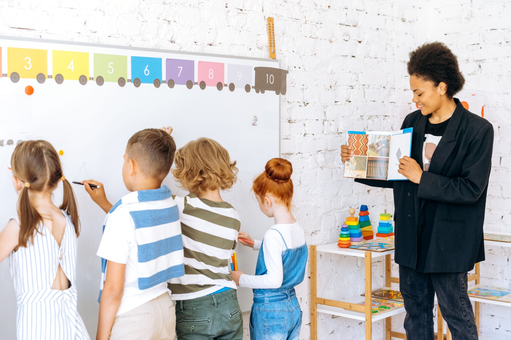
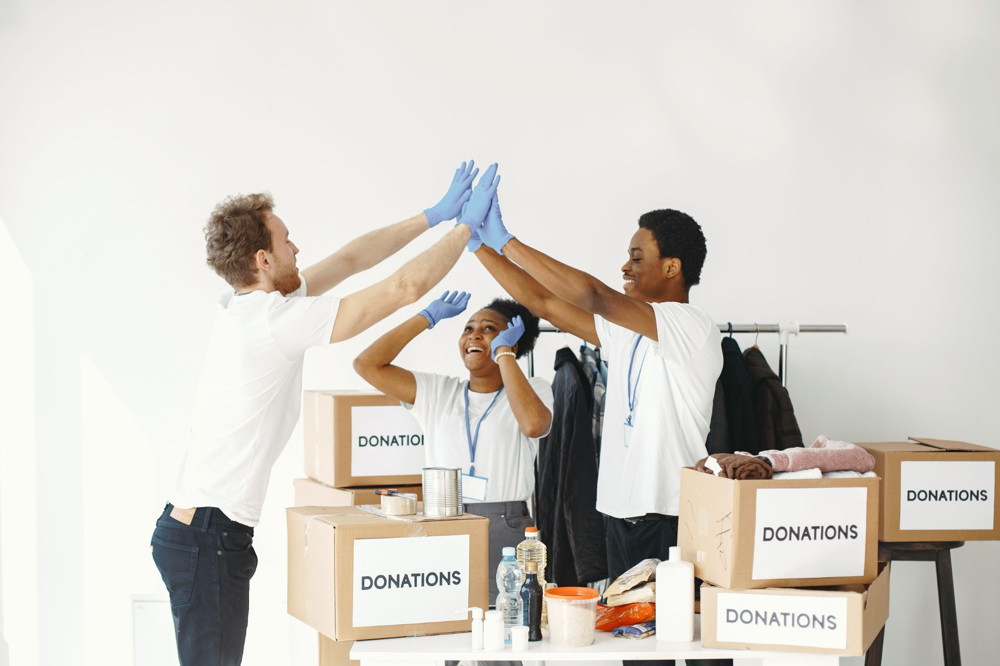
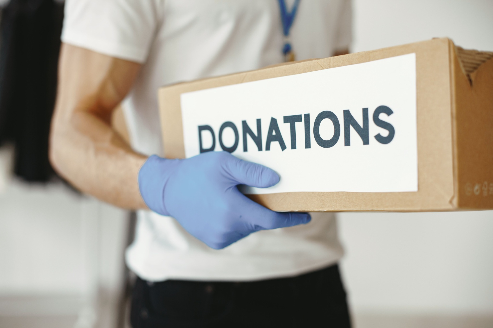

EducaçãoEducação para o Futuro
Oferece atividades de reforço escolar, leitura e inclusão digital para crianças e adolescentes.
Indicadores de impacto
- 120 participantes
- 8 oficinas realizadas
- 90% de frequência média
Categoria: Educação
Conheça nossas iniciativas e descubra diferentes formas de participar.

EducaçãoOferece atividades de reforço escolar, leitura e inclusão digital para crianças e adolescentes.
Categoria: Educação
 Segurança alimentar
Segurança alimentarCampanha de arrecadação e distribuição de alimentos para famílias em situação de vulnerabilidade.
Categoria: Segurança alimentar

VoluntariadoVocê pode contribuir com seu tempo, conhecimento e habilidades.

DoaçõesAs doações ajudam a manter os projetos e ampliar o número de pessoas atendidas.
Meta: R$ 10.000,00
Arrecadado: R$ 6.750,00